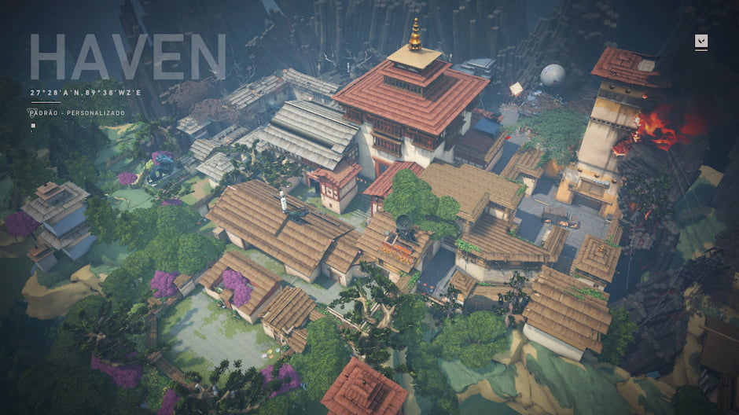

MAPAS
 Este mapa está no céu acima de Veneza, onde partes da cidade se ergueram após os eventos do filme Duelistas. |
"City of Flowers" é o nome da cidade em que Lotus se passa, mas também o nome de um filme lançado quando Lotus foi lançado. |
|---|---|
 Breeze é uma espécie de forte abandonado com dois bombsites que dispõem de muitos espaços e entradas.E confrontos a longa distancias. |
 Mapa na qual é necessario que players repensem estrategias de ataque e defesa, o mapa tem objetos interativos. |
 Está situado em um Geodome subaquático em Lisboa, Portugal, e é o primeiro mapa a ser definido na Ω-Earth. |
 Um mapa localizado no ambiente árido do Marrocos, é um dos 4 mapas lançados com o lançamento inicial de VALORANT. |
 Ice Box atualmente, é um dos noves mapas em rotação para competitivo e sem classificação. |
 Haven é um dos nove mapas de VALORANT. Atualmente, é um dos sete em rotação para competitivo e sem classificação. |
 Split é um dos nove mapas de VALORANT. Atualmente, é um dos sete em rotação para competitivo e sem classificação. The map shows a city with a traditional side and a modern, business side to it, and it is 'split' between the two. |
 The Range, também conhecido como "The Practice Range", é um mapa jogável onde o tutorial do jogo é definido. |